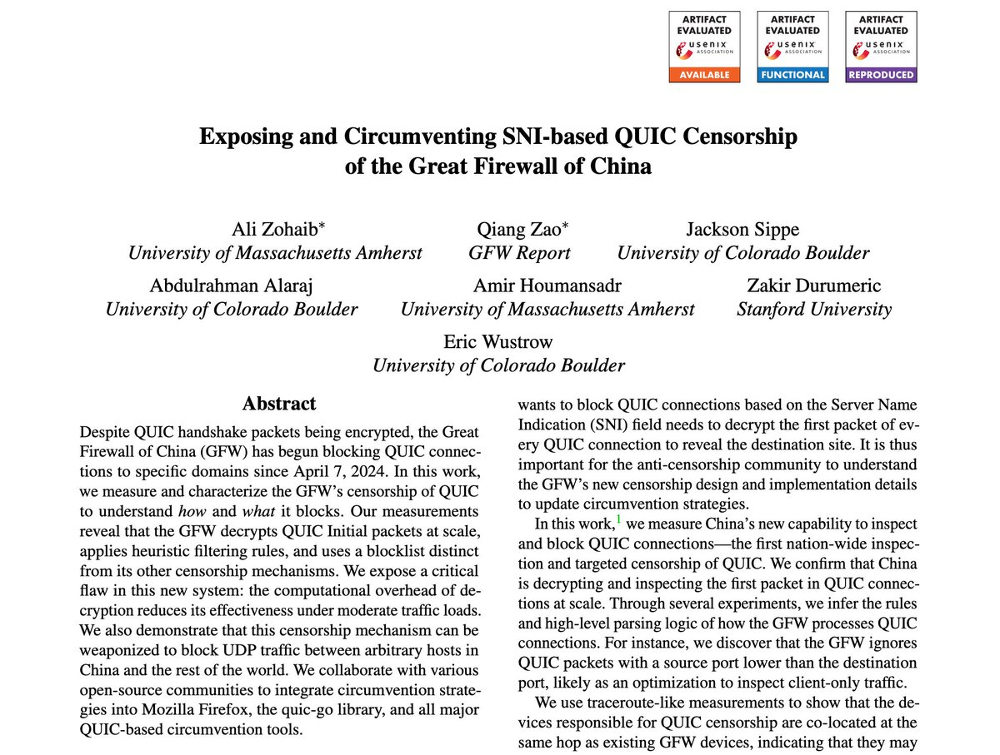
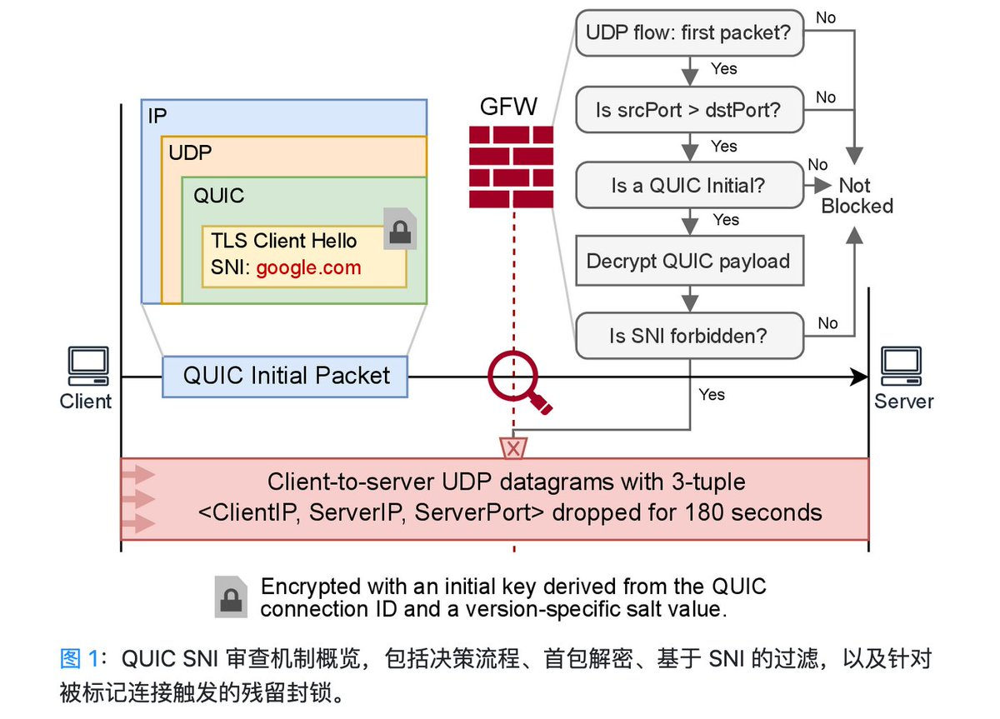
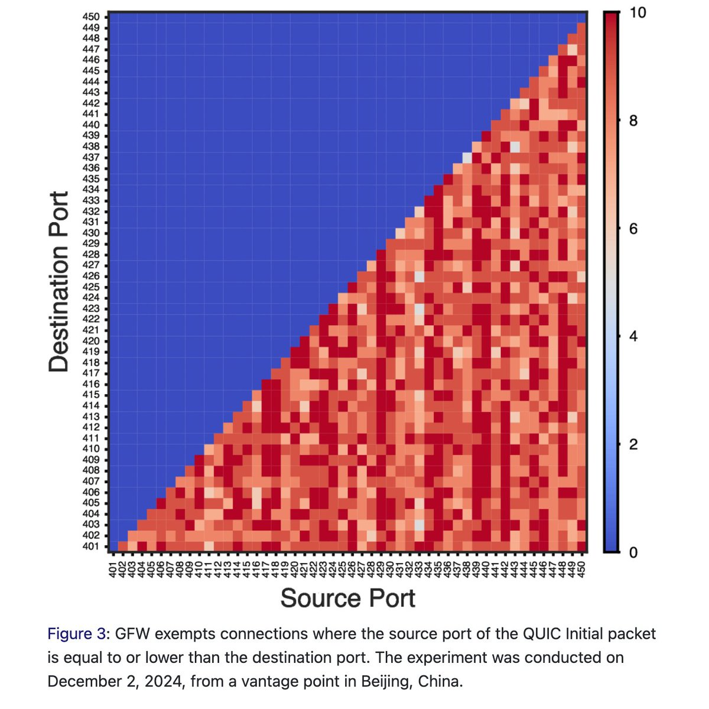
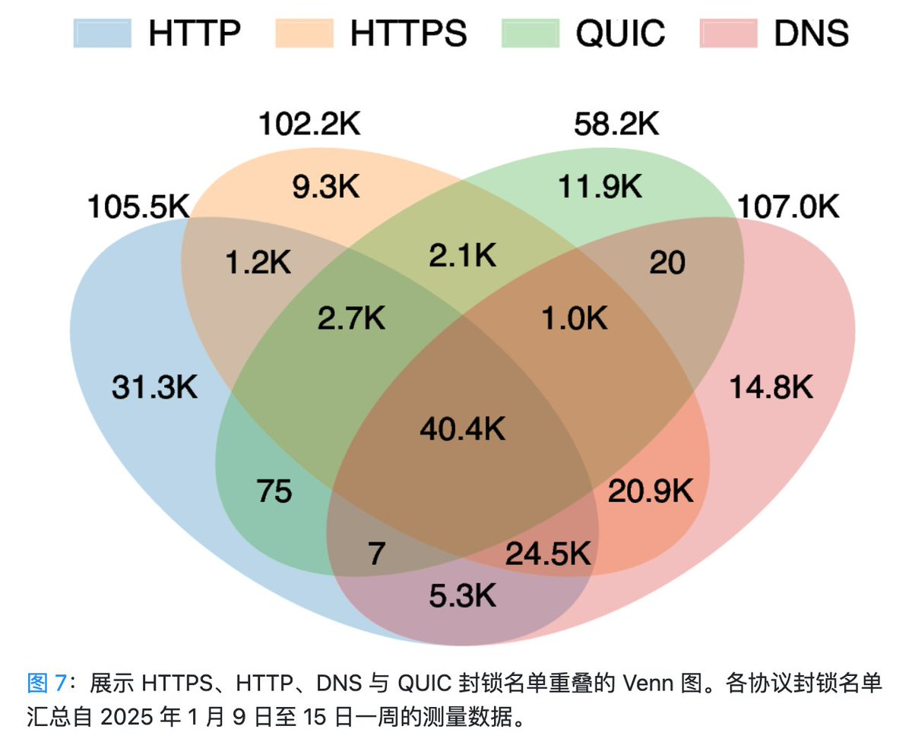

中国国家防火墙真是每一款有点人气的通信协议的忠实红队啊……
以及GFW Report真有专业感，可惜我不懂计网，不然我也想参与工作……

以及GFW Report真有专业感，可惜我不懂计网，不然我也想参与工作……




推文 1/3
中国防火长城 (GFW) 自2024年4月起进行了升级，现可通过检测加密的QUIC初始包，进行基于SNI的实时审查与域名屏蔽。
我们在USENIX Security '25的最新论文中，深入分析了其审查逻辑、启发式解析规则和黑名单，揭示了GFW的屏蔽方式与目标。
论文中文版: https://t.co/8ixIEXe1zR https://t.co/PU6t8kL8nZ
中国防火长城 (GFW) 自2024年4月起进行了升级，现可通过检测加密的QUIC初始包，进行基于SNI的实时审查与域名屏蔽。
我们在USENIX Security '25的最新论文中，深入分析了其审查逻辑、启发式解析规则和黑名单，揭示了GFW的屏蔽方式与目标。
论文中文版: https://t.co/8ixIEXe1zR https://t.co/PU6t8kL8nZ